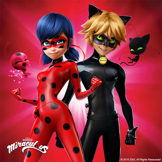
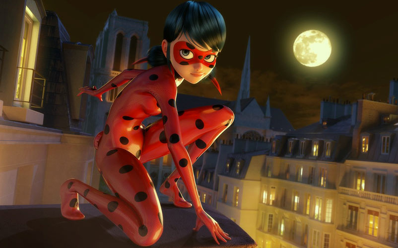
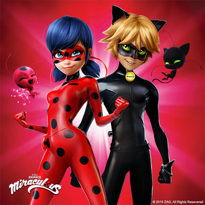
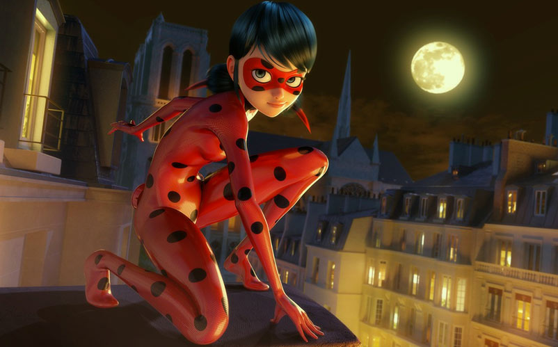

This series focuses on teenagers Marinette Dupain-Cheng and Adrien Agrests who are the superheros Ladybug and Cat Noir but both are unaware of each other's identity.
Basic Facts |
|
|---|---|
| Genre | Action, Magical girl |
| Country of Origin | France |
| Main Characters | Marinette Dupain-Cheng aka Ladybug Adrien Agreste aka Cat Noir |
| Created by | Thomas Astruc |
| Directed by | Thomas Astruc Christelle Abgrall Wilifried Pain Jun Violet |
| Written by | Thomas Astruc Sébastien Thibaudeau |
| Producers | Jeremy Zap Aton Soumache Jacqueline Tordjman Maurice Marciano |
| Number of episodes | 26 + special episode |
| Miraculous Ladybug Website | |
The following is a Youtube clip of a Miraculous Ladybug episode: